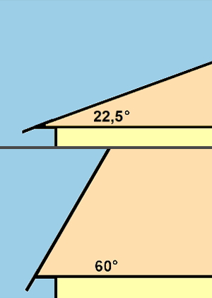

Dächer mit einer Neigung bis 22,5° gelten als Flachdächer und sind keine geneigten Dächer..
Steildächer haben eine Neigung von mehr als 22,5° bis 60°.
Bei größeren Dachneigungen als 60° ist ein Arbeitsgerüst einzusetzen.
Bei Dachneigungen zwischen 45° und 60° sind Arbeitsplätze mit mindestens 0,50 m breiten, waagerechten Standplätzen erforderlich.